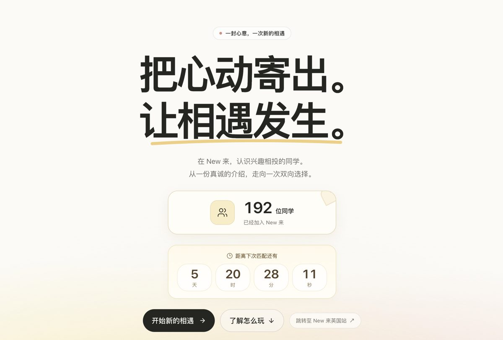
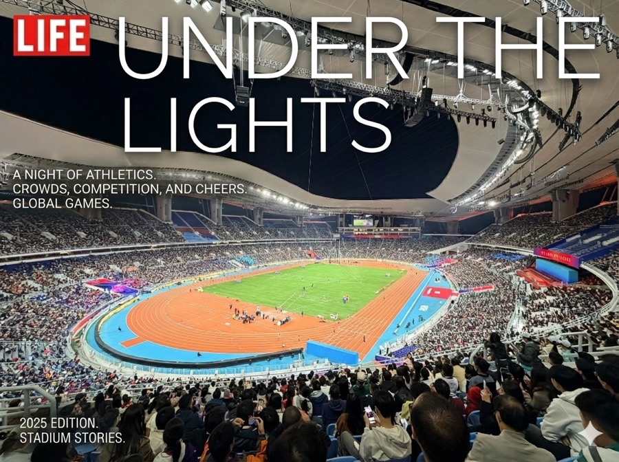
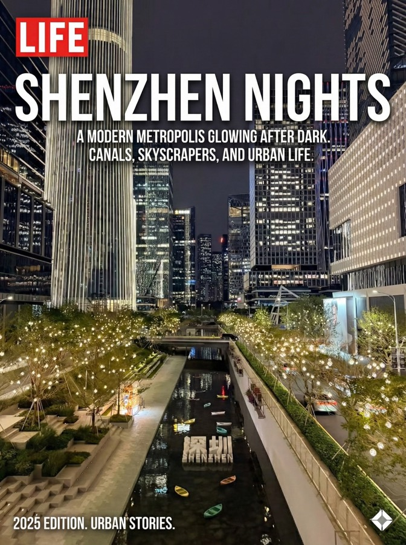

About关于
Education教育背景
Harbin Institute of Technology (Shenzhen)哈尔滨工业大学（深圳）
B.Eng. in Computer Science and Technology · transferred from Industrial Design本科 · 计算机科学与技术（转自工业设计）
Expected Jun 2028预计 2028.06 毕业
Hi, I’m Zekai. Before switching to computer science I studied industrial design, and Ecure, an intervention robot for autistic children that I worked on as a design student, won an iF DESIGN AWARD 2025.你好，我是苑泽楷。转到计算机之前我学的是工业设计，读设计时参与的孤独症儿童智能干预机器人 Ecure，获得了 iF DESIGN AWARD 2025。
I’m currently an Evaluation & Benchmark Intern at Tencent’s Foundation Model Dept. I’m co-first author on two closed-loop 3D spatial benchmarks, built an automated rubric-and-judge pipeline that agrees with human graders 93.9% of the time, and turn failure analysis of agent trajectories into data and reward suggestions for training.现在我在腾讯基础模型部做评测 Benchmark 实习：共同一作完成两项三维空间闭环交互基准，搭建了 Rubric 与 Judge 自动化评测链路（机评-人评一致率 93.9%），并把智能体轨迹的失败归因转成训练侧的数据与奖励建议。
Before that, I worked on agent evaluation and product at ByteDance (Volcano Engine) and on AI NPC agents at Parametrix. I also built Hseek, a campus matching platform, on my own; it reached 2,000+ users in five days.在这之前，我在字节跳动 · 火山引擎做 Agent 评测/产品实习，在超参数科技做 AI NPC Agent；也独立做了校园匹配平台哈机觅 Hseek，5 天覆盖 2,000+ 用户。
Away from the screen, I travel whenever I can and make a magazine cover for each trip. I also like city walks, exhibitions, Li Jian’s songs, karaoke and good food.离开屏幕时，我喜欢旅行，并给每段旅程做一期杂志封面；也喜欢 City Walk、看展、李健的歌、K 歌和美食。
Research研究
-
Space Track: How Multimodal Agents Perceive, Update, and Act in Changing 3D Worlds
Chenglong Shi*, Zekai Yuan*, Yue Song, Jon Pu, Will Wu · 2026
Five walkable first-person 3D worlds that change as the agent acts, with 59 long-horizon tasks (15 of them counterfactual controls); seeds are oracle-verified and an isolated server audits every run. Across 9 frontier models, 885 episodes and 46k steps, the best completion rate is only 55%: agents can describe a change yet fail to act on it, and a ground-truth map lifts success from 25% to 47%.5 个随行动变化的可行走第一人称三维世界、59 个长程任务（含 15 个反事实对照），种子经 Oracle 验证、隔离服务端审计防作弊。跑测 9 个前沿模型、885 局 / 4.6 万步，最强完成率仅 55%：智能体能描述变化却无法据此行动，给真值地图后成功率 25% → 47%。

-
A closed-loop 3D benchmark from first-person RGB alone仅凭第一人称 RGB 的三维闭环交互基准
Co-first author · under double-blind review, name withheld共同一作 · 双盲在投，暂隐去名称
Lego bricks and mechanical puzzles test physical manipulation and mechanism reasoning with no privileged coordinates: 6 categories, 36 task families and 108 instances. Run on 12 models, including two in-house Hunyuan versions.以乐高积木与机械谜题考察物理操作与机制推理，不给特权坐标，共 6 大类、36 题族 / 108 实例；跑测 12 个模型（含混元自研 2 版）。
-
From failed trajectories to training suggestions从失败轨迹到训练建议
I built an Agent Trace inspection operator that attributes every multi-turn episode and maps failures onto an embodied atomic-skill taxonomy. Four causes dominate for the in-house model: it misjudges first-person distance and turning angle and burns its step budget on tiny aiming corrections; it keeps no external state on long explorations and calls solvable tasks “impossible”; it ignores failure feedback and calls tools from other environments; and it cannot infer motion cycles from multiple frames. From this I proposed three data types (metric perception, exploration with external memory, multi-frame timing), recovery trajectories for SFT, and RL penalties on invalid calls and wasted steps with step-level process supervision.自建 Agent Trace 质检算子对多轮轨迹逐局归因，并映射到具身原子能力 taxonomy，定位自研模型四类主因：第一人称距离 / 转角估不准，步数耗在反复微调瞄准；长程探索不记外部状态，迷路后误判“无解”；对失败反馈不归因、跨环境误调工具；不会从多帧画面推算运动周期。据此提出补第一人称度量感知、长程探索 + 外部记忆、多帧时序推算三类数据，SFT 补“失败→验证→回退”纠错轨迹，RL 对非法调用与步数浪费加惩罚并做步级过程监督。
Experience经历
-
2026.08 — Present至今
Evaluation & Benchmark Intern · Tencent, Foundation Model Dept.评测 Benchmark 实习 · 腾讯 · 基础模型部
Co-first author on the two 3D benchmarks above. Built EyeBench-HY, a visual benchmark reverse-engineered from community feedback, with an automatic generation pipeline (proportional sampling → scripted ground truth → multi-model pass@1 → re-balancing). Turned manual rubric grading into a “rubric → judge → agreement metrics → dashboard” pipeline; after comparing 6 kinds of judge models, machine–human agreement reached 93.9%.共同一作完成上方两项三维空间闭环交互基准。基于社区评论逆向构建视觉评测基准 EyeBench-HY，搭建“按比例出题 → 脚本生成 GT → 多模型 pass@1 → 迭代配比”的自动出题流水线；把人工 Rubric 评测改造成“标准 → Judge 机评 → 一致性指标 → 可视化看板”链路，横评 6 类 Judge 完成选型，机评-人评一致率 93.9%。
- Exploring探索中Scientific 3D (Sci3D-Bench): 300 program-verified questions built from real protein structures (PDB / AlphaFold) and 65 whole-body CT scans; the source files stay outside the sandbox, so models must rotate, clip and read slices in a viewer to answer.科学三维（Sci3D-Bench）：基于真实蛋白结构（PDB / AlphaFold）与 65 例全身 CT 构建 300 道程序核验的三维题；源文件锁在沙箱外，模型只能操作查看器旋转、剖切、阅片作答。
- Exploring探索中Code-to-video (coding2video): one generation round plus four chained edits on animation code, scored deterministically by diffing the render traces of consecutive rounds, with a vision model only as a fallback.代码生成视频（coding2video）：“1 轮生成 + 4 轮链式修改”的可编辑性任务，用前后两轮渲染轨迹差分做确定性判分，视觉模型只兜底。
-
2026.04 — 2026.08
Agent Evaluation & Product Intern · ByteDance, Volcano EngineAgent 评测/产品实习 · 字节跳动 · 火山引擎
Built an LLM-as-judge evaluation and attribution harness on LangGraph on my own, with state transitions, conditional routing, web tool calls, low-confidence review and human hand-off. Machine–human agreement on live traffic rose from 60% to 85%, and a release evaluation shrank from a week to a day. Helped move a phone-assistant agent from a single end-to-end chain to a modular architecture, owned routing definitions and acceptance for 15 industries × 9 intents, and set up a benchmark pipeline: live traffic → semantic-cluster sampling → context rewriting → rubric grading → human QA.基于 LangGraph 独立搭建 LLM-as-Judge 评测与归因 Harness，设计状态流转、条件路由、联网工具调用、低置信度复核与人工介入机制；线上回流 case 机评-人评一致率由 60% 提升至 85%，单次版本评测周期由一周压缩至一天。参与手机助手 Agent 由端到端单链路向模块化架构转型，负责 15 类行业 × 9 类意图的路由定义与评测验收；建立“线上回流 → 语义聚类抽样 → 上下文重写 → Rubric 机评 → 人工质检”的 benchmark 构建链路。
-
2025.12 — 2026.03
AI NPC Agent · ParametrixAI NPC Agent · 超参数科技
Built complex game-agent showcases on Redis, Python and Milvus (an affinity-driven NPC and a dynamic trader) that supported demos for 3 business clients. Owned the v1.0 launch of a Coze / Dify-style agent platform and tracked down 30+ P0/P1 defects.基于 Redis / Python / Milvus 搭建复杂游戏 Agent 案例（好感度 NPC、动态交易员），支撑 3 家 B 端客户演示；负责类 Coze / Dify 智能体平台 V1.0 上线，定位修复 30+ 项 P0/P1 缺陷。
Projects作品
-
Hseek (New 来): campus matching platform哈机觅 Hseek（New 来）：校园匹配平台
Personal startup · founder, solo full-stack · 2026.03 — present个人创业项目 · 创始人 / 独立全栈开发 · 2026.03 至今
With no prior backend experience, I went from product design to a full-stack launch in 2 days: questionnaire scoring with stable matching, campus identity verification, weekly matches and mutual confirmation.零后端基础，2 天独立完成从产品设计到全栈上线：问卷评分与稳定匹配算法、校园身份认证、按周匹配与双向确认。
500+ sign-ups on day one, 2,000+ users in 5 days上线首日注册 500+，5 天覆盖 2,000+ 用户

-
Ecure: intervention robot for autistic childrenEcure 孤独症儿童智能干预机器人
iF DESIGN AWARD 2025 · Professional Concept: Product Design · team memberiF DESIGN AWARD 2025（专业概念：产品设计）· 团队成员
Personalised social training that combines emotion recognition, AR projection and multi-sensor interaction. Chosen from nearly 11,000 entries from 66 countries and regions (only 188 professional concepts won), and featured as best practice in the iF Design Trend Report 2025.结合情绪识别、AR 投影与多传感器交互的个性化社交训练机器人；从 66 个国家和地区近 11,000 件作品中获奖（专业概念类仅 188 件），入选 iF 2025 设计趋势报告最佳实践。

Life生活
A realist with a streak of idealism. Every trip becomes a magazine cover.一个带有理想主义的现实主义者。每段旅程，都做成一期杂志封面。




Contact联系
Happy to talk about evaluation, agents, design, or a trip worth taking.欢迎聊评测、智能体、设计，或者一段值得去的旅行。
cdjabah13@gmail.com